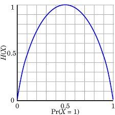
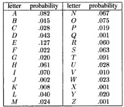
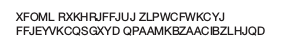
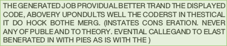
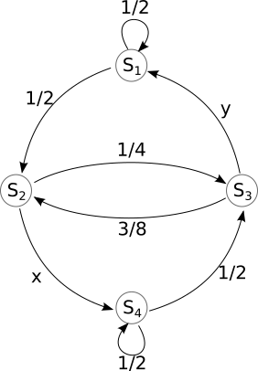

Discrete Information Sources
Contents
1. Discrete Information Sources¶
1.1. A mathematical definition of information¶
In order to analyze information generation, encoding and transmission with mathematical tools, we need a solid and clear definition of information.
1.1.1. What is information?¶
Let’s start first with some simple examples of messages carrying information.
Consider the sentence:
“Poli Iași (the local football team) lost the last match”
Does this message carry information? How, why, how much?
When thinking about the information brought by such a phrase, let’s consider the following facts:
the message carries information only when you don’t already know the result
if you already known the result, the message is useless (brings no information)
if the result was to be expected, there is little information (e.g. suppose Poli Iași plays agains FC Barcelona)
if the result is highly unusual, there is more information in this message
Information and events¶
As seen in the example above, the notion of information requires a probabilistic setting.
We define the notion of information for a probabilistic event:
an event may or may not happen, and when it does happen, it creates information
the information is: “this event happened”
the amount of information depends on the probability of that event
Hint
As a rule of thumb, keep in mind:
if you can guess something most of the times, it has little information
if something is unexpected, it has a lot of information
Question
Let’s answer some questions:
does a sure event (p = 1) bring any information?
does an almost sure event (e.g. P = 0.9999) bring little or much information?
does a rare event (e.g. P = 0.0001) bring a little or much information?
Definition of information¶
Throughout this class, we refer to a probabilistic event as a “message”
The information attached to a message \(s_i\) is rigorously defined as: $\(i(s_i) = -\log_2(p(s_i))\)$
Consequences of this definition:
Information of an event is always non-negative:
Lower probability (rare events) means higher information
Higher probability (frequent events) means lower information
The certain event (\(p = 1)\) brings no information:
An event with probability \(0\) brings infinite information (but it never happens…)
When two independent \(s_i\) and \(s_j\) events take place, their information gets added:
The choice of logarithm¶
Using the logarithm function in the definition is crucial, since it is responsible for most of these properties. In particular, the fact that logarithm transforms a product into a sum allws to sum the informations of independent events.
Any base of logarithm can be used in the definition, not just base 2, and all the consequences still hold.
By convention, we typically use the binary logarithm \(\log_2()\). In this case, the information \(i(s_i)\) is measured in bits
We could use instead the natural logarithm \(ln()\), and the result is measured in nats.
The choice of the algorithm is not critical and doesn’t change anything fundamental, since logarithm bases can always be converted to/from one another:
This means that information defined using different logarithms differ only by a scaling factor:
Following the convention of the scientific literature, we shall use the base 2 logarithm \(log_2()\) from now on.
1.1.2. Information Source¶
A probabilistic event is always part of a set of multiple events, containing all the possible outcomes which can happen at a given time.
Each event (known as “message”) has its own probability, which are all known beforehand. At a given time, only one of the events can happen. This carries the information that it happened (out of all possible events), and the quantity information quantity is dependent of the probability.
We define an information source as the set of all events, together with their probabilities.
The set of all messages forms the “alphabet” of the source.
When an event takes place, we say that “the information source generates a message”.
Sequence of messages¶
We are very rarely interested in a single message. Instead, we are interested analyzing large amounts of messages.
An information source creates a sequence of messages, by generating messages one after another, randomly, according to the known probabilities.
e.g. like throwing a coin or a dice several times in a row
Depending on how the messages are generated, we distinguish between two types of information sources:
Memoryless sources: each new message is generated independently on the previous messages
Sources with memory: when generating a new message, the probabilities depend on one or more of the previous messages
1.1.3. Discrete memoryless source¶
A discrete memoryless source (DMS) is an information source which produces a sequence of independent messages. The choice of a message at one time does not depend on the previous messages. Each message has a fixed probability, and every new message is generated randomly based on the probabilities.
The set of probabilities is the distribution of the source, also known as a probabilty mass function.
We represent a DMS as below, by giving it a name (“S”), listing the messages (\(s_1, s_2, s_3\)) and the probability distribution:
A DMS is a discrete, complete and memoryless:
Discrete: the set of messages is a discrete set
Complete: the sum of all probabilities is 1, which means that one and only one event must take place at a given time: $\( \sum p(s_i) = 1 \)$
Memoryless: each message is independent of the previous messages
A good example of a DMS is a coin, or a dice.
One message generated by DMS is also called a random variable in probabilistics.
Example
A coin is a discrete memoryless source (DMS) with two messages:
A dice is a discrete memoryless source (DMS) with six messages:
Playing the lottery can be modeled as DMS:
An extreme type of DMS containing the certain event:
Receiving an unknown bit (0 or 1) with equal probabilities:
Sequence of messages from DMS¶
A DMS produces a sequence of messages by randomly selecting a message every time, with the same fixed probabilities, producing a sequence like:
For example, throwing a dice several times in a row you can get a sequence
In a sequence which is very long, with length \(N \to \infty\), each message \(s_i\) appears in the sequence approximately \(p(s_i) * N\) times. This gets more precise as \(N\) gets larger.
1.1.4. Entropy of a DMS¶
We usually don’t care about the information of single message. We are interested in long sequences of messages (think millions of bits of data).
To analyze this in an easy manner, we need the average information of a message from a DMS.
The entropy of a DMS source \(S\) is the average information of a message:
where \(p(s_k)\) is the probability of message \(k\)
Since information of a message is measured in bits, entropy is measured in bits (or bits / message, to indicate it is an average value).
Entropies using information defined with different logarithms base are differ only by a scaling factor: $\( H_b(S) =\frac{H_a(S)}{\log_a(b)} \)$
Example
Let’s compute the entropies of some of the DMS defined above.
Coin:
Dice:
Lottery:
Receiving 1 bit with equal probabilities:
(hence the name!)
Interpretation of the entropy¶
The entropy of an information source S is a fundamental quantity. It allows us to compare two different sources, which model different scenarios from real life.
All the following interpretations of entropy are true:
\(H(S)\) is the average uncertainty of the source S
\(H(S)\) is the average information of a message from source S
A very long sequence of \(N\) messages generated by source S has total information \(\approx N \cdot H(S)\)
We shall see in Chapter III that the entropy \(H(S)\) says something very important about the number of bits requires to represent data in binary form:
\(H(S)\) is the minimum number of bits (\(0\), \(1\)) required to uniquely represent a message from source S, on average
A very long sequence of \(N\) messages generated by source S needs at least \(\approx N \cdot H(S)\) bits in order to be represented in binary form
Thus, \(H(S)\) is crucial when we discuss how to represent data efficiently.
Properties of entropy¶
We prove the following properties of entropy:
\(H(S) \geq 0\) (non-negative)
Proof: via definition
\(H(S)\) is maximum when all \(n\) messages have equal probability \(\frac{1}{n}\). The maximum value is \(\max H(S) = \log(n)\)
Proof: only for the case of 2 messages, use derivative in definition
Diversification of the source always increases the entropy
Proof: compare entropies in both cases
The entropy of a binary source¶
Consider a general DMS with two messages:
It’s entropy is:
The entropy value as a function of \(p\) is represented below:

As an illustration of the property no.2 from above, we can see that the maximum entropy value of a DMS with two messages is reached when the two messages have the same probability, \(p = 0.5\):
and its value is:
Let’s play games¶
Let’s analyze the following guessing games with the tools introduced until now.
Exercise
I think of a number between 1 and 8. You have to guess it by asking yes/no questions.
How much uncertainty does the problem have?
How is the best way to ask questions? Why?
What if the questions are not asked in the best way?
On average, what is the number of questions required to find the number?
Now suppose I randomly choose a number according to the following distribution:
On average, what is the number of questions required to find the number?
What questions would you ask?
But what if the distribution is the following?
Let’s draw some general conclusions:
What distribution makes guessing the number the most difficult?
What distribution makes guessing the number the easiest?
An optimal decision tree is best sequence of questions to ask in order to find the number with a minimum number of questions, reprsented as a binary tree graph. You will see examples when we solve the exercises.
Efficiency, redundancy, flow¶
Using the \(H(S)\), we define several other useful characteristics of a DMS.
The efficiency of a DMS indicates how close is the entropy to its maximum possible value:
The redundancy of a source is the remaining gap.
Absolute redundancy of a DMS:
Relative redundancy of a DMS:
Suppose that each message \(s_i\) takes some time \(t_i\) to be transmitted via some communication channel. The information flow of a DMS \(S\) is the average information transmitted per unit of time:
where \(\overline{t}\) is the average duration of transmitting a message:
The information flow is measured in bps (bits per second), and is important for data communication.
The Kullback-Leibler distance¶
Suppose we have the following two DMS:
\begin{gather*} \sIV{P}{0.14}{0.29}{0.4}{0.17} \ \sIV{Q}{0.13}{0.33}{0.43}{0.11} \end{gather*}
The probability values of \(P\) and \(Q\) are close, so the two DMS are similar. But exactly how much similar?
In many application we need a way to quantify how similar or how different are two probability distributions. The Kullback-Leibler distance (also known as “Kullback-Leibler divergence”, or “cross-entropy”, or “relative entropy”) is a way to quantify numerically how much different is one distribution from another one,
The Kullback–Leibler (KL) distance of two distributions P and Q is
The two distributions must have the same number of messages.
The KL distance provides a meaningful way to to measure the distance (difference) between two distributions. In many ways it provides the same intuitions as a geometrical distance:
\(D_{KL}(P, Q)\) is always \(\geq 0\), and is equal to \(0\) only when P and Q are the same
The higher \(D_{KL}(P, Q)\) is, the more different the two distributions are
However, one important property is not satisfied, and for this reason the KL distance is not proper distance function as defined e.g. in mathematical algebra. The KL distance is not commutative: :
Despite this, it is widely used in applications.
1.1.5. Extended DMS¶
The n-th order extension of a DMS \(S\), represented as \(S^n\), is a DMS which has as messages \(\sigma_i\) all the combinations of \(n\) messages of \(S\):
If \(S\) has \(k\) messages, \(S^n\) has \(k^n\) messages,
Since \(S\) is DMS, consecutive messages are independent of each other, and therefore their probabilities are multiplied:
An example is provided below:
Extended DMS are useful because they provide a way to group messages inside a sequence of messages.
Suppose we have a long sequence of binary messages:
What kind of source generated this sequence?
We can view it as a sequence of 16 messages generated from a source \(S_1\) with two messages, \(s_1 = 0\) and \(s_2 = 1\)
We can group two bits, and view it as a sequence of 8 messages generated from a source \(S_2\) with messages \(00\), \(01\), \(10\), \(11\)
We can group 8 bits into bytes, and view it is a sequence of 2 messages from a DMS \(S_8\) which generates 256 bytes
… and so on
There must be a connection between the DMS, no matter how we group the bits, since we’re talking about the same binary sequence. The connections is that they are all just n-th order extensions of the initial binary DMS.
Entropy of a DMS¶
We now prove an important theorem about extended DMS.
Theorem 1.1 (Entropy of extended DMS)
The entropy of a \(n\)-th order extension is \(n\) times larger than the entropy of the original DMS
Interpretation: grouping messages from a long sequence in blocks of \(n\) does not change total information of a sequence.
when we have a group of \(N\) bits from a source \(S\), total information is \(\approx N \cdot H(S)\)
if we group 8 bits = 1 byte, we have \(\frac{N}{8}\) messages from a source \(S^8\), total information is the same: \(\approx \frac{N}{8} \cdot 8 H(S)\)
This makes sense because we’re talking about the same sequence, even if we group bits into half-bytes, bytes, 32-bit words etc.
Proof. TBD. For now will be done in class.
1.1.6. DMS as models for language generation¶
We use information sources as mathematical models for real-life data generation and analysis. A straightforward example in in text analysis, since text is basically a sequence of graphical symbols (letters and punctuation signs), similar to a sequence of messages from an information source.
Is a DMS a good model for text? Let’s take the following example, for the English language.
The probability distribution of letters in English (26 letters, ignoring capitalization) is given below:

We consider a DMS whhich has the 26 letters as messages, with these probabilities.
Generating a sequence of letters from this DMS produces the following:

This doesn’t look like English. What’s wrong?
A DMS is memoryless, which means that every message is generated irrespective of the previous ones. This is not a good model for a text in a language. In a real language, the frequency of letter depends a lot on the previous letters:
ais a common letter in English (probability \(8.2 \%\)), but if the previous letter is alsoa, the probability is close to zero because the groupaais extremely raresimilarly,
hhas a much higher probability if the previous letter istthen if the previous letter isx
The DMS is not capturing the dependencies between letters, because the memoryless property makes it very restrictive. We need to consider sources with memory.
1.1.7. Sources with memory¶
Definition 1.1
A source has memory of order \(m\) if the probability of a message depends on the last \(m\) messages.
The last \(m\) messages define the state of the source (denoted as \(S_i\)). We say that the source “is in the state \(S_i\)”.
A source with \(n\) messages and memory \(m\) has a number of states equal to \(n^m\).
The source generates messages randomly, but with different message probabilities depending in which state the source is. We use the following notation:
\(p(s_i | S_k)\) = probability of message \(s_i\) in state \(S_k\)
Sources with memory are also known as Markov sources.
Example
The folllwing is a source with \(n=4\) messages and memory \(m=1\)
if last message was \(s_1\), choose next message with distribution
if last message was \(s_2\), choose next message with distribution
if last message was \(s_3\), choose next message with distribution
if last message was \(s_4\), choose next message with distribution
Transition matrix¶
When a new message is provided, the source transitions to a new state:
Therefore we can view the probabilities of messages \(s_i\) as transition probabilities from some state \(S_u\) to another state \(S_v\)s.
The transition probabilities are organized in a transition matrix \([T]\) of size \(N \times N\), where \(N\) is the total number of states.
The element \(p_{ij}\) from \([T]\), located on row \(i\) and column \(j\), is the transition probability from state \(S_i\) to state \(S_j\).
Exercise
Write the transition matrix \([T]\) for the previous example
Graphical representation of sources with memory¶
The transition matrix which defines a source with memory can be represented graphically, as a directed graph where the vertices are the states, and the edges are the transitions. Every edge (transition) has a certain probability,
At whiteboard: draw states and transitions for previous example (source with \(n=4\) messages and memory \(m=1\))
1.1.8. Entropy of sources with memory¶
How to compute the entropy of a source with memory?
Note that each state \(S_k\) has a different distribution, so each state can be viewed as a kind of DMS. Therefore we can compute an entropy \(H(S_k)\) for every state \(S_k\), using the same formula as for DMS:
However, the source moves from state to state, and it can spend more time in a state than in another one. How to define the global entropy?
The global entropy of a source with memory is the average entropy of the states:
The probabilities \(p_k\) are known as the stationary probabilities, and they represent the probability that the source is in state \(S_k\) at a given moment.
Considering that the source operates for a very long time and generates a very long sequence of messages, you can think of \(p_k\) as the fraction of time when the source was in state \(S_k\).
Ergodic sources¶
How to find out the weights \(p_k\)?
To find this, we first need to answer the following question:
If we know the state \(S_k\) at time \(n\), what will be the state at time \(n+1\)?
Let \(p_i^{(n)}\) denote the probability that the source is in state \(S_i\) at time \(n\). The source generates a message. In what state will the source end up at time \(n+1\)?
The probabilities of the states at time \(n+1\), \(p_i^{(n)}\), are found by multiplying with \(T\)
After one additional message, at time \((n+2)\)? Multiply once more with \(T\):
For every new moment of time, we do one more multiplication with \(T\). In general, if we start from time \(0\), after \(n\) messages, the probabilities that the source ends up in a certain state are:
However, in general we don’t know the initial state or the initial probabilities.
Ergodicity¶
To work around the problem of the unknown initial state, we make use a property called “ergodicity”.
A source is called ergodic if every state can be reached from every state, in a finite number of steps.
If an ergodic source runs for a very long time \(M \to \infty\), it will go through all transitions and all states many times, and, eventually, the fraction of time it finds itself in a certain state \(S_k\) stabilizes. This happens irrespective of what was the starting state. Intuitively, the initial state doesn’t matter if the source will anyway travel through all states and transitions many times, as \(M \to \infty\).
We formalize this as the following property of an ergodic source with memory:
For an ergodic source with memory, after many messages, the probabilities of the states become stationary, i.e. thet converge to some fixed values, no matter what state the source started from initially).
\[\lim_{n \to \infty} [p_1^{(n)}, p_2^{(n)}, ... p_N^{(n)}] = [p_1, p_2, ... p_N]\]
Finding the stationary probabilities¶
The ergodicity property helps us find the values of the stationary probabilities. When \(n\) is very large, after \(n\) messages and after \(n+1\) messages the probabilities are the same, and therefore the following equation holds:
Note that we dropped the time \(^(n)\) or ^\(^(n+1)\), since the values have converged to fixed values and the times doesn’t matter anymore.
This is an equation system in matrix form, with \(M\) unknowns and \(M\) equations.
However, the system is rank-deficient, i.e. one row is actually a linear combination of the others. Because of this, one row of the system should be removed, and replaced with a new equation which reflects the fact that the sum of probabilities is 1:
With this new equation, we obtain a complete system, which has a unique set of solutions by solving the system.
Example: modelling English¶
Let us consider a sequence of information sources modelling English language, going progressively from the most rudimentary model (memoryless), to the most advanced (source with memory of large order).
Let’s look at a sample sequence of letters generated from these sources.
Text generated by memoryless source with equal probabilities:

A memoryless source, but the probabilities of each letter as the ones in English:
A source with memory of order \(m=1\), i.e. frequency of letter pairs are as in English:

A source with memory \(m=2\), i.e. the frequency of letter triplets as in English:

A source with memory \(m=3\), frequency of 4-plets as in English:

Sources with more memory are able to capture better the statistical dependencies between the letters, and because of this the generated text looks more and more like English.
1.1.9. Working with information sources¶
When using information sources to model a real-life process, you will encounter some typical use-cases.
How to train an information source (e.g. find the probabilities)
Generate sequences from a source
Compute the probability of an existing sequence
Training an information source model¶
By training a model we mean finding the correct value of the parameters. In our case, the parameters are the probabilities of messages.
For simplicity, we consider the case of text analysis in a certain language (e.g. English).
First, we need a large sample of text, representative for the language.
How to find the probabilities of a DMS?¶
Go through your sample text, count the occurrences of every distinct character, then divide the counters to the total number of characters. You obtain the probabilities of each individual characters.
How to find the probabilities of a source with memory of order \(m\)?¶
A direct approach to find the transition matrix \([T]\) is as follows:
First, define each possible state \(S_k\). Let’s assume there are \(N\) states.
Go though the sample text, count every occurrence of a group of \((m+1)\) distinct characters. Place the counters in an \(N \times N\) matrix \([T]\), where each row corresponds to the old state (first \(m\) characters of the group), and columns are the new state (last \(m\) characters of the group).
Normalize each row: divide each row to the sum of the row. This ensures that the resulting row sums up to 1, i.e. it forms a probability distribution.
One drawback is the huge memory requirements required to count all the possible combinations. The memory requirement increases at least exponentially with the memory order \(m\). For example, if there are 26 letters, a source with memory of order \(m = 3\) has \(26^3 = 17576\) states, while a source with \(m=4\) has \(26^4 = 456976\) states. Considering capital letters and punctuation signs, the numbers are much larger. This makes it very cumbersome to work with sources of large memory, at least with such a brute-force approach.
Generating messages from a source¶
Supposing we have a source, we generate sequences by generating messages one after another.
For a DMS, we generate each message independently of all the previous ones.
For a source with memory \(m\), described by a transition matrix \(T\), we generate a message according to the transition probabilities from the row of \(T\) corresponding to the current state. Then we update the current state and repeat the process.
For a source with memory, we must also specify how to generate the first \(m\) messages, i.e. before we have the first \(m\) previous messages which define a full state.
Compute the probability of an existing sequence¶
Suppose we have a sequence of messages, e.g.
Seq: wirtschaftwissenschaftler
If we have an information source, how do we compute the probability that the sequence Seq was generated from the source?
For a DMS, simply multiply the probabilities of every letter in the sequence
For a DMS with memory \(m\), look at every group of \((m+1)\) letters and multiply the corresponding probabilities from the transition matrix \(T\)
Multiplying many probabilities quickly results in a very small number, which makes it problematic on a digital device due to numerical errors.
To avoid this, instead of probabilities we can work with the log-probabilities, i.e. \(\log(p)\), which allows for much more manageable values. Instead of multiplying probabilities, we sum the log-probabilities.
1.1.10. Example application¶
Suppose we receive a text with random missing letters
We need to fill the blanks with the appropriate letters
How?
build a model: source with memory of some order
fill the missing letter with the most likely letter given by the model
Exercise¶
Consider a discrete source with memory, with the graphical representation given below. The states are defined as follows: \(S_1: s_1s_1\), \(S_2: s_1s_2\), \(S_3: s_2s_1\), \(S_4: s_2s_2\).
{.id width=35%}
Questions:
a. What are the values of \(x\) and \(y\)? b. Write the transition matrix \([T]\); c. Compute the entropy in state \(S_4\); d. Compute the global entropy of the source; e. What are the memory order, \(m\), and the number of messages of the source, \(n\)? f. If the source is initially in state \(S_2\), in what states and with what probabilities will the source be after 2 messages?
Chapter summary¶
Information of a message: \(i(s_k) = -\log_2(p(s_k))\)
Entropy of a memoryless source: \(H(S) = \sum_{k} p_k i(s_k) = -\sum_{k} p_k \log_2(p_k)\)
Properties of entropy:
\(H(S) \geq 0\)
Is maximum when all messages have equal probability (\(H_{max}(S) = \log(n)\))
Diversfication of the source always increases the entropy
Sources with memory: definition, transitions
Stationary probabilities of ergodic sources with memory: \([p_1, p_2, ... p_N] \cdot [T] = [p_1, p_2, ... p_N]\), \(\sum_i p_i = 1\).
Entropy of sources with memory: $\(H(S) = \sum_k p_k H(S_k) = - \sum_k p_k \sum_i p(s_i | S_k) \cdot \log(p(s_i | S_k)\)$